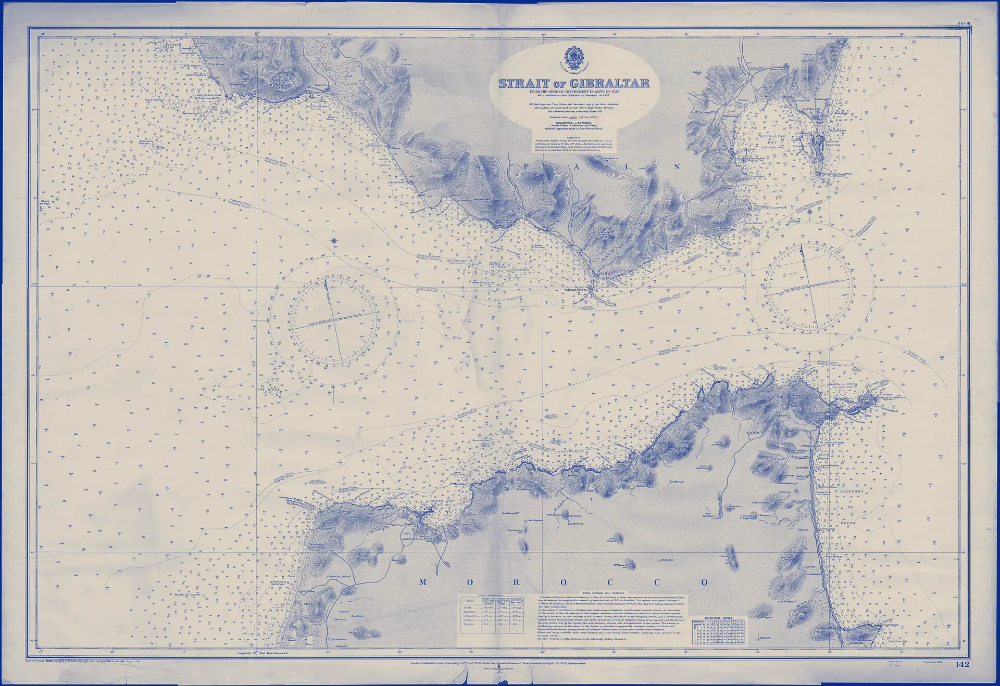

Contacto
Para pedir, rellena el cupón. Para cualquier otra cosa, escríbenos o pásate por la tienda de la fábrica entre abril y octubre.
Dónde y cuándo
La fábrica y la tienda
Calle de los Corcheros, 5
11393 Zahara de los Atunes (Barbate), Cádiz
Correo
Horario de la tienda
- Abril a octubre
- De lunes a sábado, de 10 a 14 h
- Mayo y junio
- También por la tarde, de 18 a 20 h
- Noviembre a marzo
- Cerrada; los pedidos siguen por cupón


